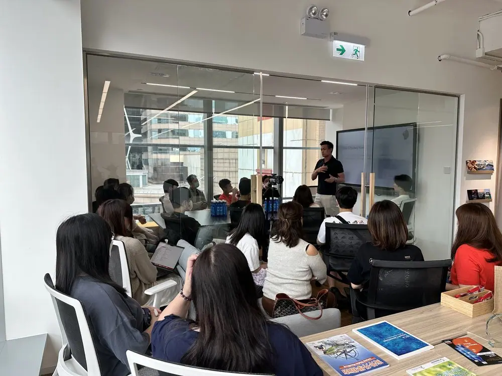
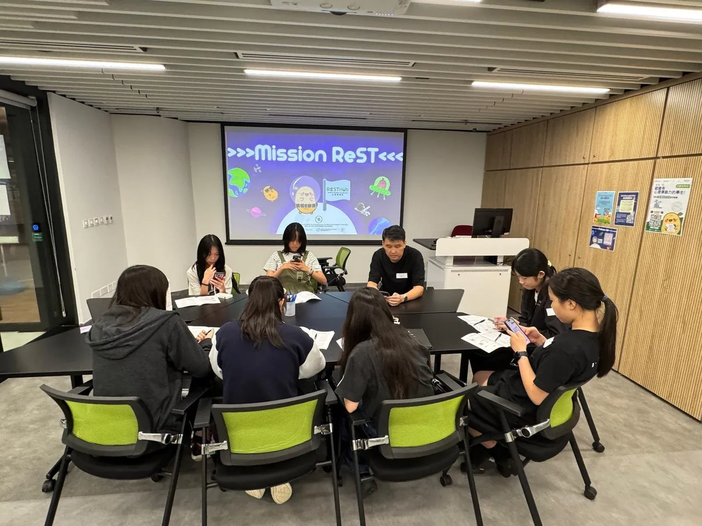
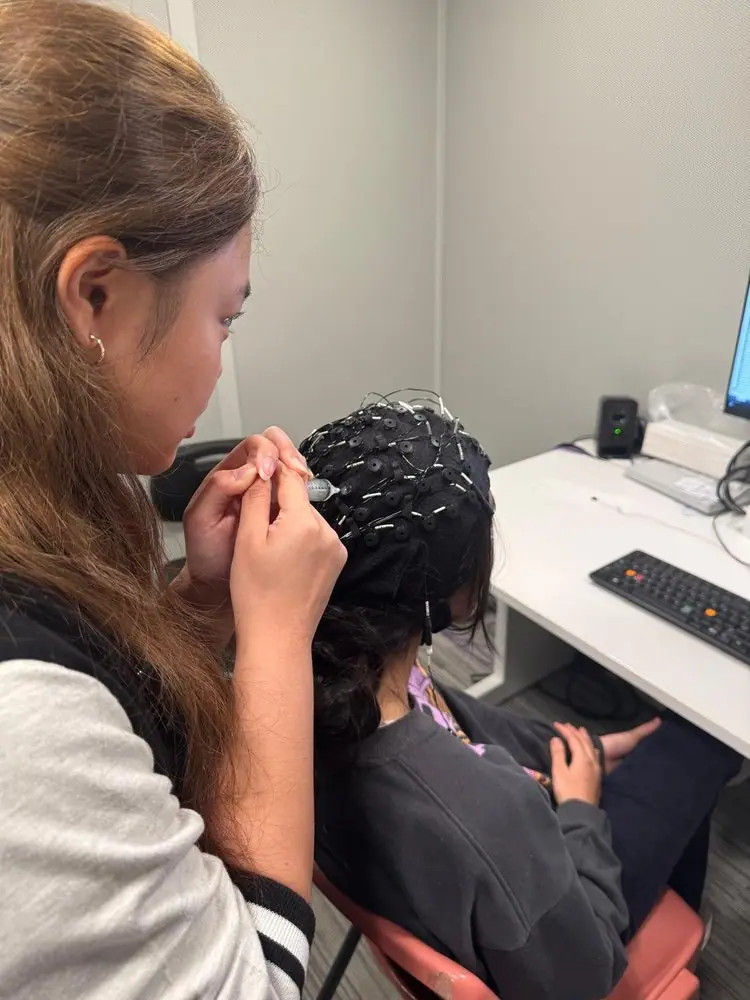

About IYOF
Helping young people connect the dots.
Invent Your Own Future is a youth-led nonprofit founded in Hong Kong. We help under-resourced young people explore career pathways and build toward brighter futures.


Our mission
More paths should feel possible.
IYOF creates access to the people, programmes and practical experiences that can help young people make more informed choices about their futures.
From education to experience.
We provide access to scholarships, seminars, job shadowing and internship opportunities that bridge education and career.
With an expanding presence in Los Angeles, USA, IYOF remains committed to creating life-changing opportunities for young people across the globe.



What we do
-
Student Ambassador
Students organise events, bring in speakers and work with schools and other student groups.
-
Events and Camps
Hands-on summer camps, workshops and career panels let students explore different fields.
-
Internship Opportunities
Selected workplace opportunities help students gain practical exposure.
-
Alumni Network
Past participants stay connected through events, mentorship and internship opportunities.

Our founder
Preston Chan
Born and raised in Hong Kong, Preston graduated from Singapore International School (HK) and continues his academic journey at the University of Southern California.
In 10th grade, limited knowledge of career pathways led him to found Invent Your Own Future. His aim was to highlight the diversity of career options available to him and his peers.
Since then, IYOF has interviewed professionals across different fields, shared career insights through educational seminars, and created job-shadowing and internship opportunities for students.
Our people
- Advisory Board
Senior leaders from business, education, technology, public health and public service who guide IYOF.
- Ambassador Executive Committee
The three student leaders who run the Student Ambassador team.